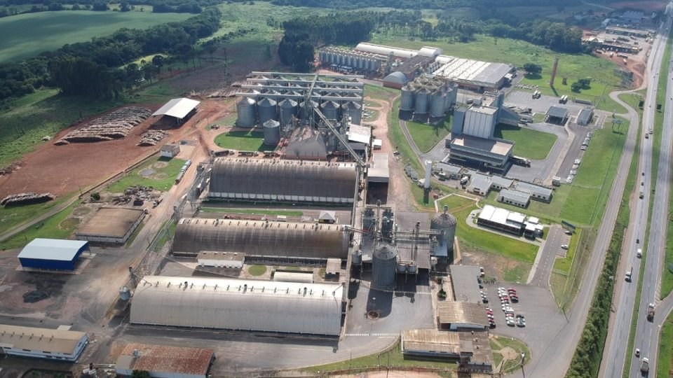
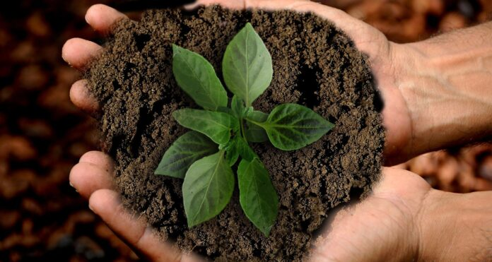

A Frísia foi projetada com tecnologia de ponta desde suas primeiras instalações, o que a torna uma das cooperativas agroindustriais mais modernas do Brasil. Desde a concepção de suas fábricas e centros de produção, a cooperativa incorporou sistemas automatizados e processos inovadores para garantir alta eficiência e qualidade em toda a cadeia produtiva.
As instalações da Frísia utilizam equipamentos de última geração para o processamento de laticínios, grãos e outros produtos agrícolas. O controle rigoroso de temperatura, umidade e outros fatores críticos no processamento permite uma produção de alta qualidade e com precisão tecnológica. Além disso, os processos de industrialização contam com avançados sistemas de filtragem e tratamento de água, o que contribui significativamente para a sustentabilidade da operação.
Um dos destaques é o uso de energias renováveis, como a energia solar e biogás, além da implementação de práticas de economia circular. Isso inclui a reciclagem de resíduos agrícolas e a reutilização de subprodutos do processo de produção, otimizando o uso de recursos e reduzindo a pegada ambiental.
Como uma cooperativa em constante evolução, a Frísia mantém suas unidades sempre atualizadas com as mais recentes inovações tecnológicas do setor agroindustrial. A busca constante por melhorias reflete o compromisso da cooperativa com a sustentabilidade, a inovação e a excelência produtiva, posicionando-a como líder no agronegócio brasileiro.